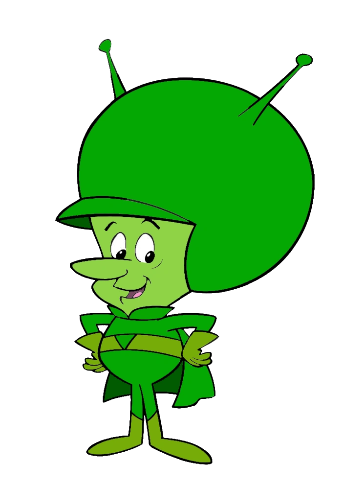

Make a remote Minecraft: Bedrock Edition server show up as a LAN game on your console.
Download Latest ReleaseXbox and PlayStation only let you join Minecraft Bedrock servers that appear as a "LAN game" on your local network. Gazoo answers the console's LAN discovery broadcast on your device's behalf, then transparently relays all UDP traffic to the real remote server — no server-side changes required.
--headless --server=host:port) — doneWindows, macOS, and Linux builds are fully functional today. On Android the relay keeps running in the background via a foreground service with a persistent notification. iOS support is experimental until Apple grants the restricted multicast entitlement needed to receive the console's discovery broadcast.
Your console and the device running Gazoo must be on the same Wi-Fi/local network. On first run, desktop platforms may prompt to allow incoming network connections (firewall) — accept it, or the console won't be able to reach the relay.
Gazoo is named after The Great Gazoo, the small green alien character from Hanna-Barbera's The Flintstones — chosen because, like the character, it quietly makes something appear where it technically isn't.
This project is an independent fan homage and is not affiliated with, endorsed by, or sponsored by Hanna-Barbera, Warner Bros., or any of their affiliates. "The Great Gazoo," The Flintstones, and all related characters and artwork are trademarks and copyrights of their respective owners, who retain all rights to them. The mascot image on this site belongs to its original rights holders and is used here informally, not commercially.